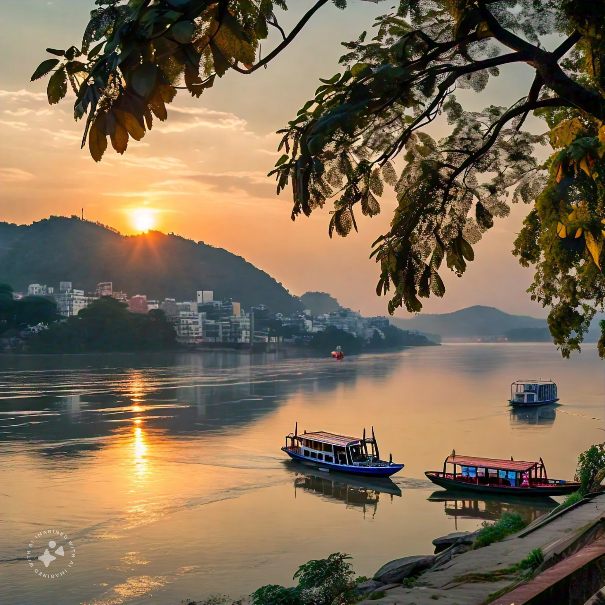
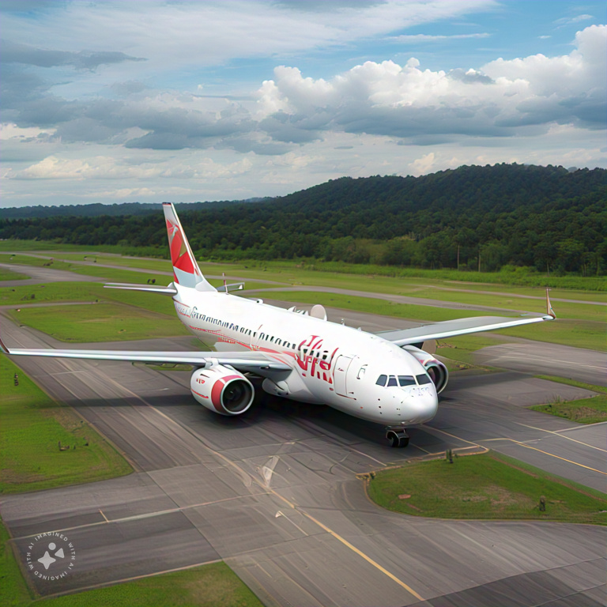

Discover the Gateway to Northeast India
Guwahati, the bustling city on the banks of the mighty Brahmaputra, is known for its rich culture, heritage, and natural beauty. Whether you're looking to explore ancient temples, enjoy local cuisine, or take a scenic river cruise, Guwahati has something for everyone!
Guwahati is well-connected by air, rail, and road. The Lokpriya Gopinath Bordoloi International Airport serves as a hub for flights to and from major Indian cities. The Guwahati Railway Station is a key junction in the region, and the city is accessible by national highways.
Guwahati offers a vibrant shopping experience. You can explore:
Have questions? Feel free to reach out to the Guwahati Tourism Group:
Email: info@guwahatitourism.in
Phone: +91-12345-67890